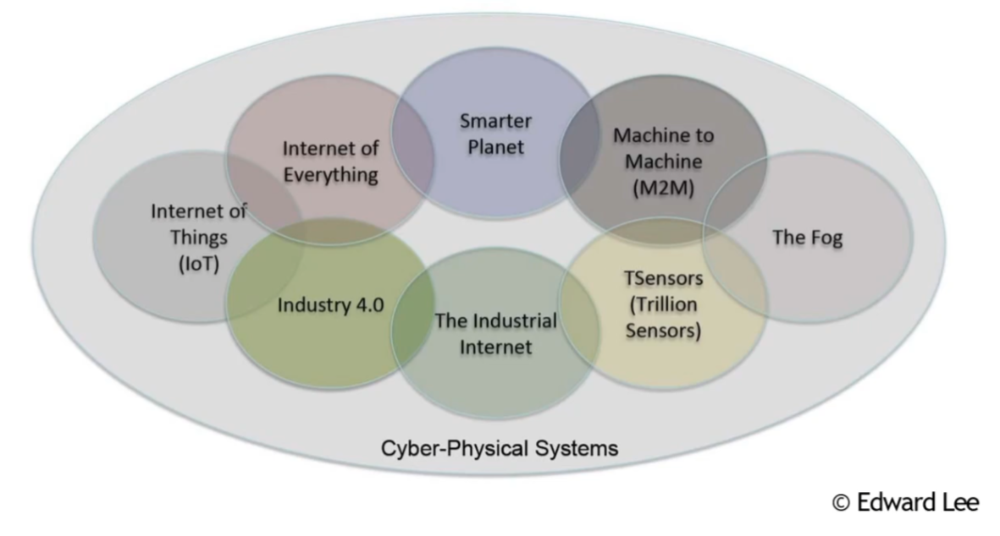
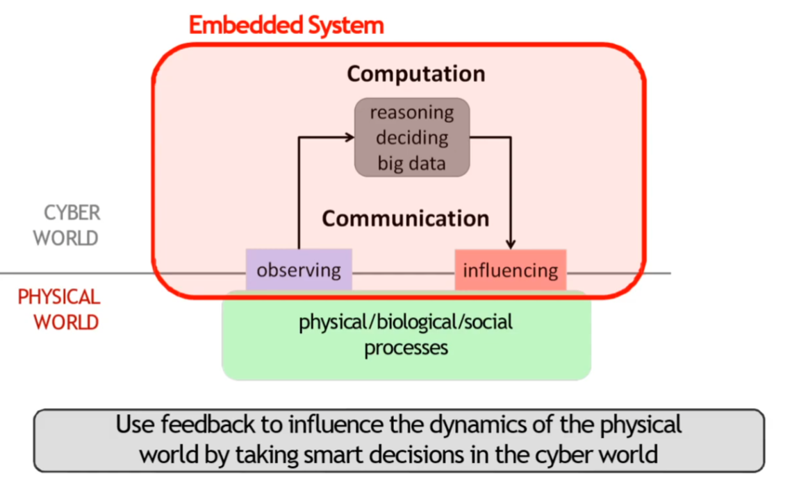
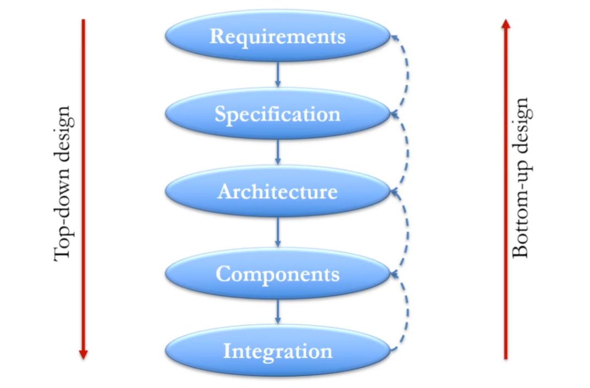
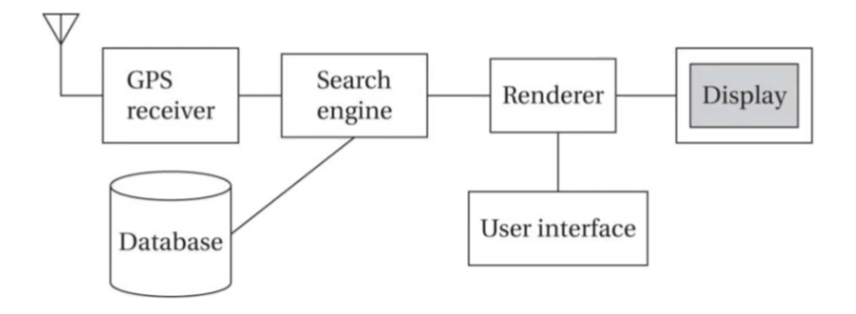
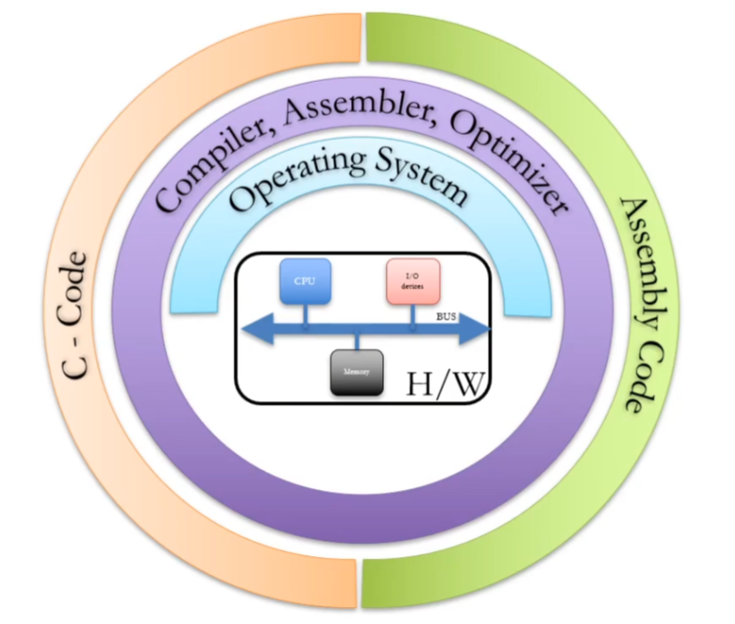
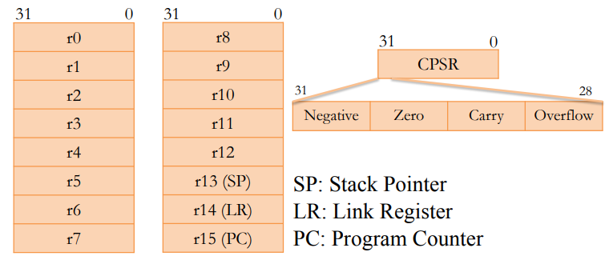
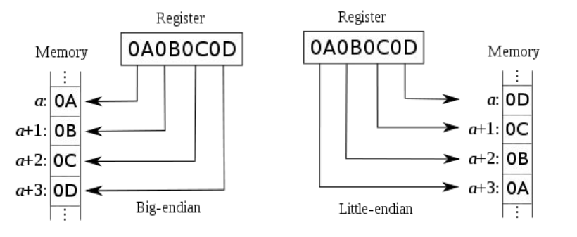

Introduction to ARM Assembly Language
- Chapter 1 (1.1 - 1.3.5)
- Chapter 2 (2.1 - 2.3.2)
Embedded System Basics
Definition
Embedded System: Any device that includes a programmable computer but is not itself a general purpose computer.
An alternate definition: A computing system, specialized for only a few applications with none (or minimum) end user programmability, embedded into a larger product.
The main purpose of the product with an embedded system is not computing.


Design objectives
- Predictability
- "It is essential to predict how a CPS (cyber-physical system) is going to behave under any circumstances (...) before it is deployed" (Maj, 14)
- Dependability
- "CPS must operate dependably, safely, securely, efficiently and in real-time." (Raj, 10)
- "Efficiency
- Energy and run-time efficient
- Weight and cost efficient
- Reactive
- Must react to stimuli from environment
- "A reactive system is one which is in continual interaction with its environment and executes at a pace determined by that environment." (Bergé, 1995)
- Time constrained
- Must meet real-time constraints
- For hard real-time systems, right answers arriving late are wrong.
- "A real-time constraint is called hard, if not meeting that constraint could result in a catastrophe" (Kopetz, 1997)
- Specialized
- Specialized towards few applications or domains
- Domain knowledge helps optimize the design e.g. minimize resource usage, maximize predictability, etc.
Embedded vs General Purpose System
| _ | Embedded Systems | General Purpose Systems |
|---|---|---|
| Number of applications | Few (known at design time) | Broad range of applications |
| Programmable by end user? | No | Yes |
| Performance requirements | Fixed (additional performance not useful) | Higher performance is useful (enables new applications) |
| Design criteria | Cost, Power consumption, Worst case speed, Size and weight, Dependability | Cost, Power consumption, Average speed |
Embedded System Design
Embedded system design flow

Requirements
Informal description of the system in layman's language.
- Functional: Answers the question - "What should the system do?"
- E.g.: A GPS Moving Map should display the map of terrain around user's current position.
- Non-functional: Requirements not related to the functionality - such as cost, size, power, etc.
- E.g.: A GPS Moving Map should cost under 1000 NOK, fit in the palm of a hand, and run for atleast 8 hours on two batteries.
Specification
An unambigous technical description derived from Requirements. Detailed enough to design the system architecture.
Architecture
A high level overview of system structure in terms of components needed and their interaction.

Key challenge: How to distribute the functionality among hardware and software to meet the competing requirements: cost, performance, power, etc.
Components
Choose or build the components to implement the Architecture and meet the Specifications.
- Standard components: CPUs, memory, software libraries, etc.
- E.g.: GPS receiver and topographic database
- Custom components: Printed circuit boards, software modules, etc.
- User interface
Integration
Put the components together and make the system work!
Key challenge: Unforeseen bugs may appear during integration.
- Requires debugging
- Careful component designing can help a lot.
Embedded System: Programming the hardware

Assembly Programming Introduction
In this course, we will examine ARM ISA (Instruction Set Architecture) to learn assembly.
Instruction Set Architecture (ISA)
- Programmer's view of hardware
- Interface between hardware and software
- Defines processor recognizable machine instructions
- Defines architecture state, memory management, etc.
- Why is it useful?
- Abstracts away hardware implementation details
- Software can be developed (somewhat) independent of hardware implementation
- Enables multiple implementations (called Microarchitectures) of the same ISA
Machine and assembly instructions
- Machine instructions
- Strings of binary numbers
- Example: 01001011010100101011010010001010
- Processor works with machine instructions but they are difficult for humans to understand
- Assembly instructions
- Symbolic representation of machine instructions
- Easier for humans to understand
- Strict one-to-one mapping between machine and assembly instructions
Assembly code example
Hight level language (c/Java)
a[0] = b[0] + 5;
Assembly code:
ldr r3, [r1] ; get the value to b[0] from memory to r3
add r4, r3, 5 ; add 5 to b[0] and store in r4
str r4, [r2] ; save r4 to a[0]
Things to notice:
- Data needs to be brought to registers from memory to operate on it
- Separate instructions to access data (from memory) and operate on it
- Called load-store architecture
- An alternative architecture: register memory architecture
ARM architecture (ISA)
- ARM is a load-store architecture
- Offers several variants
- ARMv8: 64-bit architecture
- ARMv7: 32-bit architecture
- All instructions are also 32-bit
- Thumb architecture
- 16-bit instructions to reduce code size
- Thumb-2 architecture
- Supports both 16-bit and 32-bit instructions
The Thumb-2 architecture will be used in the labs of this course.
Registers
- Registers are storage locations inside the processor that hold program variables and control state
- Thumb-2 provides 16 general-purpose registers (r0-r15) and a current program status register (CPSR). Each register is 32-bit wide

Thumb-2 Instruction Categories
- Memory access instructions
- To transfer data between registers and memory
- Only instructions that can access memory
- Examples: ldr, str, etc.
- Arithmetic/logic instructions
- Perform the desired operation like: add, subtract, shift, or, and
- Operate only on registers
- Control transfer (a.k.a. branch) instructions
- Control the flow of program execution
- Jumps, loops, etc.
More details in the text book and Thumb-2 manuals!
Writing your first assembly program
Preparing to write an assembly program
High level language statement:
g = A[1] + 5
; offset in number of bytes, for int32: 4 bytes
ldr r3, [r2, #4] ; r3 = r2[1]
add r4, r3, #5 ; r4 = r3 + 5
Writing an assembly program
High level language program:
int a[2] = {10, 20};
int x;
x = a[0] + a[1];
.section .text
ldr r1, =a ; ldr is a pseudo-op here, loading the address of a
ldr r2, [r1]
ldr r3, [r1, #4]
add r4, r2, r3
ldr r1, =x
str r4, [r1]
.section .data
a:
.word 10 ; a[0]
.word 20 ; a[1]
x:
.word 0 ; x
Memory addressing: Endianness
- Given a memory address, Endianness tells where to find the first byte of a word.
- ARM supports both little and big endianness
